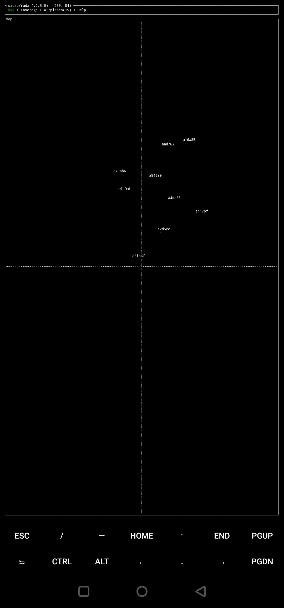

v0.5.0 Release Notes - Feb 12, 2022

rsadsb is happy to announce v0.5.0 of our library and tools. We're proud to have over 100 stars on the main repo, thanks for the support! A huge thanks to all.
See quickstart guide for a installation guide.
See Raspberry Pi in-car ADS-B Display - with Rust! for my blog post on using my libraries and applications for an in-car ADS-B display.
If you want to track Elon Musk with Rust, check this repo out ;)
Links / Changelogs
All code is released under the github/rsadsb account. Release binaries are available at the following links.
adsb_deku v0.5.0
See CHANGELOG.md for detailed notes on adsb_deku library, radar, and 1090.
The library docs.rs documentation for this release is here
dump1090_rs v0.5.0
See CHANGELOG.md for detailed notes on the dump1090_rs application.
Discuss
News
- rtl-sdr.com 2/15/2020: rsadsb: Terminal Based Aircraft Radar on the Raspberry Pi
- myraidRF OTA 2/25/2020: OTA: ADS-B Tracking at the Terminal, Open RAN Silicon, Beginner’s Guides, and More
radar
x86_64-unknown-linux-gnu

armv7-unknown-linux-gnueabihf

aarch64-linux-android

Updates
-
Now uses Mercator projection for display the airplanes on the map.
-
Add Mouse and touchscreen controls! This allows moving the map center location, as well as choosing the display mode. See the
--touchscreenoption for displaying zoom controls for platforms such as the raspberry pi.
-
Airport data can be downloaded from mborsetti/airportsdata and imported using the
--airportsand--airports-tz-filteroption. The following shows all airports big and small near my data collection site. The following is an example of zooming out and seeing all New_York and Chicago time zone airports.
This looks pretty cool even if it's very not useful :)
The following is an example of zooming out and seeing all New_York and Chicago time zone airports.
This looks pretty cool even if it's very not useful :)
 And Coverage!
And Coverage!

-
--citiesare now named--locations -
Range and Distance checks are now added, fixing some long standing bugs with mis-decoding lat/lon positions. (!101)
-
Added
Helptab with a table of key bindings: (!107)
adsb_deku (library)
- Thanks @amacd31 for fixing a bug in CPR calculations. (!78).
- Thanks @mikemorris for fixing a link in my README.md. (!61).
dump1090
- Now uses the soapysdr library for multi-sdr platforms support through the soapysdr-rs crate. Currently tested are the rtl-sdr and the hackrf support. If you test this on new SDR platforms, merge requests welcome for default gain settings!